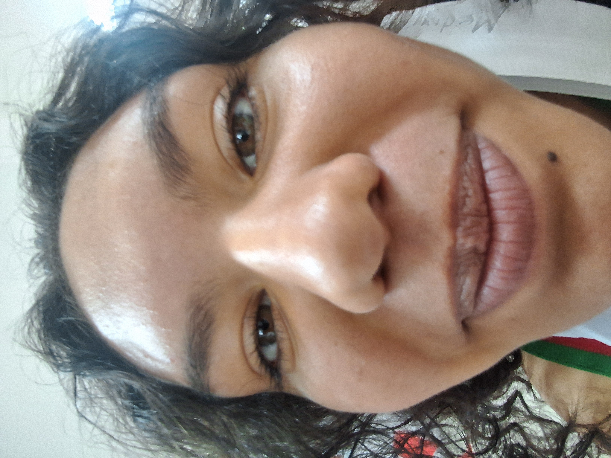
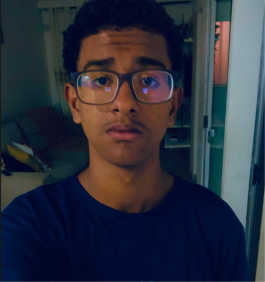

A NOSSA EQUIPE

Gabriela de Oliveira
"Meu nome é Gabriela, sou estudante do 2º B do curso Técnico em Informática do IFBA e participei da produção deste site. Foi muito importante colocar em prática o que aprendemos em sala de aula. O que mais gostei foi da experiência de ter contribuído para a produção do site abordando conteúdos Matemática e de Programação Web. Além de aprender mais sobre as duas disciplinas, também foi possível desenvolver habilidades, tornando essa uma experiência muito importante para a minha formação enquanto discente."

Isabella Filomeno
"Eu, Isabella Leandro de Souza Filomeno, do Instituto Federal da Bahia (IFBA) – Campus Santo Antônio de Jesus, participei do desenvolvimento deste projeto, que teve como objetivo demonstrar a aplicação das Funções Trigonométricas na Robótica por meio da criação de um site em HTML e CSS. Minha contribuição concentrou-se na pesquisa de artigos sobre o tema e no auxílio à programação do site. A experiência fortaleceu meus conhecimentos em Programação Web e destacou a importância do trabalho em equipe para a realização do projeto."
Nome
desc
Nome
desc

Matheus
"Meu nome é Matheus, sou estudante do IFBA-Campus Saj. Faço parte dessa equipe incrível e oque eu mais gosto de fazer é de praticar esportes e de jogos competitivos. Minha principal função foi fazer a página sobre robotica do nosso site"
Nicolly Samilly
"Meu nome é Nicolly, sou estudante do IFBA Campus Santo Antônio de Jesus e participei da produção deste site atuando no design, na pesquisa e no desenvolvimento do código. O que mais gostei foi da liberdade de poder colocar em prática todos os conhecimentos que temos em ambas as matérias, indo além do que nos foi passado em sala de aula. Além de aprofundar nosso aprendizado, essa oportunidade permitiu desenvolver novas habilidades, tornando essa uma experiência muito importante para a minha formação enquanto discente."